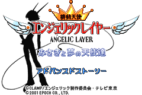
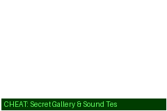

Kidou Tenshi Angelic Layer - Misaki to Yume no Tenshi-tachi (Japan)
EEPROM 64K gbakit Built-In 🎮 Button Cheat 💾 MultiBoot 🎮 4P Link
Cartridge Identity
- Game Code
AALJ(FamilyAAL)- Header Title
ANGELICLAYER- Maker / Revision
E5/ rev0- ROM Size
- 8.0 MiB (8,388,608 B)
- Save Media
EEPROM 64K- SHA-256
189fac5bc0950488951862f86b892e04ac02451c7de0b081b3d11345f255770c
Screenshots


Verified Button-Combo Cheat
Zero-patch retail controller cheat (Wave 1): 4-way counterfactually verified in headless
libmgba. See all verified titles in the Button-Combo Cheats Catalog.
- Effect
- Secret Gallery & Sound Test Unlock
- Button Sequence
UP, UP, DOWN, DOWN, LEFT, RIGHT, LEFT, RIGHT, A, B- Verification Verdict
- Visual + RAM Unique Reaction
- Target RAM Address
0x03002200- Timing Protocol
boot=360f,hold=6f,release=6f,settle=60f- Activation Indicator
- Secret gallery and sound test unlocked; visual update and IWRAM state transition
gbakit cheat verify AALJ

Link Cable & Multiplayer Communications
This title contains detected communication capabilities: 💾 MultiBoot 🎮 4P Link.
Detailed protocol specifications, SIO registers, Joybus commands, and MultiBoot sequences are documented in the Link & Multiplayer Reference.
- Multi-Player SIO (4P)
- 16-bit ring network · SIOCNT (
0x04000128) literals:0x0134d0,0x01381c,0x013898· SIODATA32/SIOMULTI0 (0x04000120) literals:0x013c2c - Single-Cart MultiBoot
- Single-Cartridge MultiBoot (Download Play) client/server handler · Thumb SWI 0x25 (
0xDF25):0x0fb5d0,0x1a9712,0x1cd17a,0x1e4c70
Battery Save Support in gbakit
Built-in definition (AALJ)
gbakit save verify AALJ save.sav
gbakit save decode AALJ save.sav
gbakit save fix AALJ damaged.sav -o repaired.savText, Fonts & Scene Data
- Primary Text Encoding
- Shift-JIS (uncompressed) (
2ASCII strings ·200Shift-JIS runs) - Font & VWF Indicators
- No VWF Table 1bpp Font · BIOS SWIs: BitUnPack
0x10:10· LZ770x11/12:19· Huffman0x13:5· RLE0x14/15:13 - Scene & Packaging
33ROM pointer tables (≥32 entries,4≥200) ·0relativeu32TOCs ·58OAM metasprite hits
Hardware MMIO Subsystems
ppu_display0x80004b8